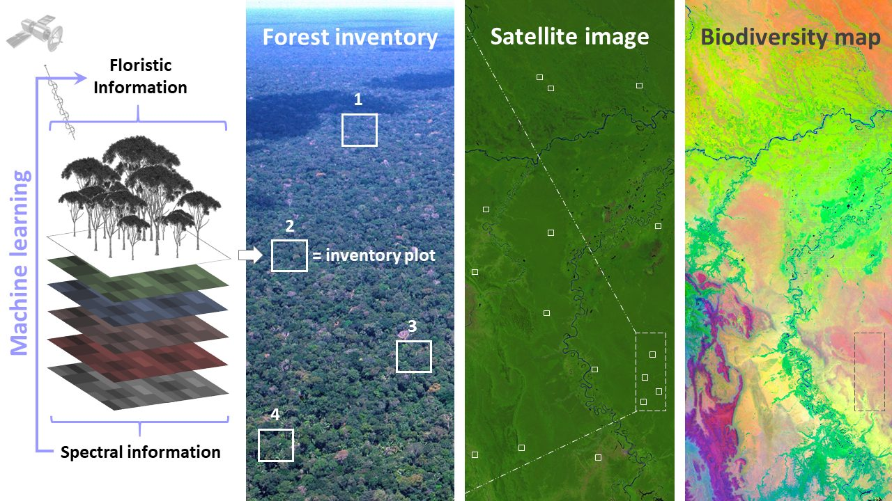
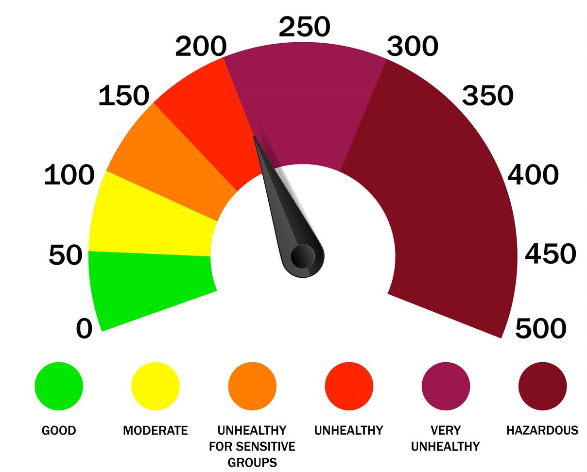
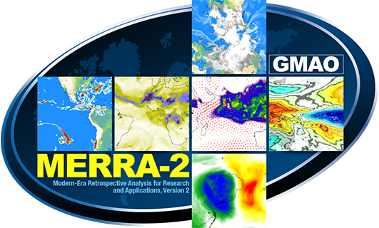
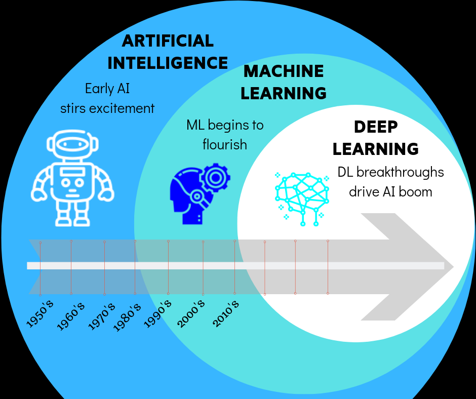
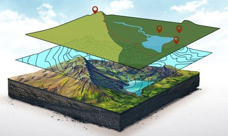

Web Resources for GeoSpatial Machine Learning and Deep Learning.

Extracting AQI data from web for data sciences analysis.
My notes in Ubuntu working

This post is about create own your blog with free resources in Github.
This post is about GIS and Remote Sensing learning and keynotes of them.
Creating weblog in combination of Jupyterlab and Quarto
My notes in Jupyterlab working

This post is about resources for machine learning and deep learning from web.

URLs for geospatial data, always in custructing!